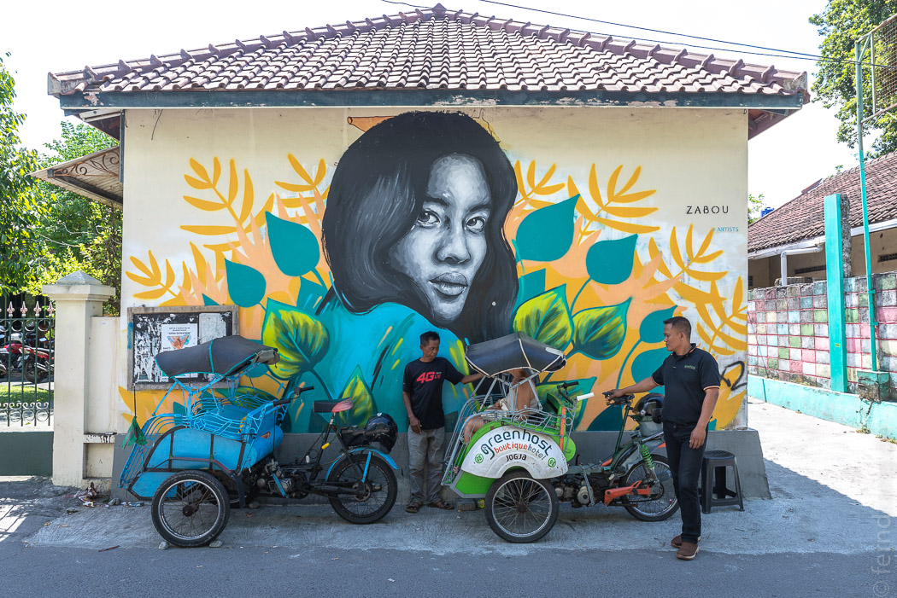
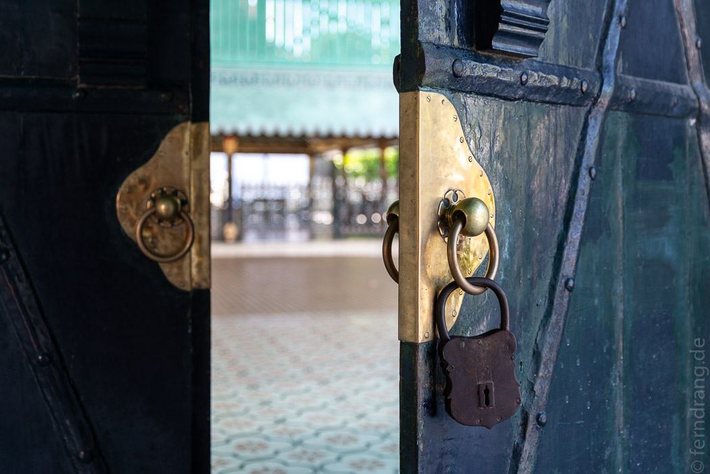
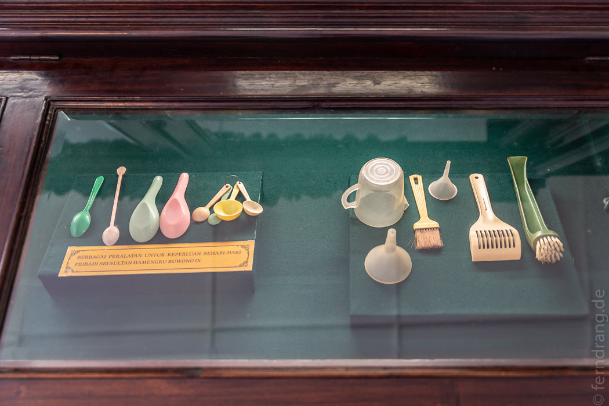
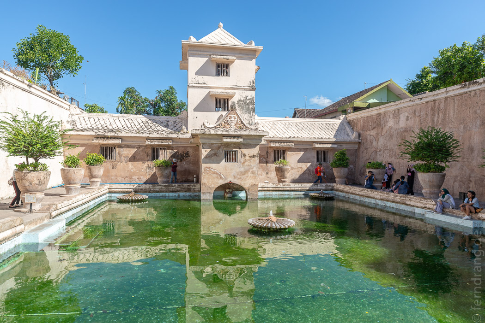
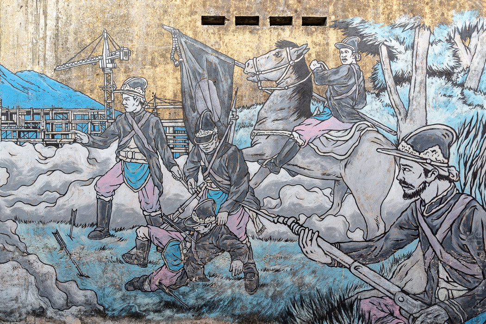
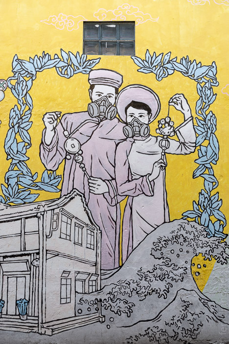
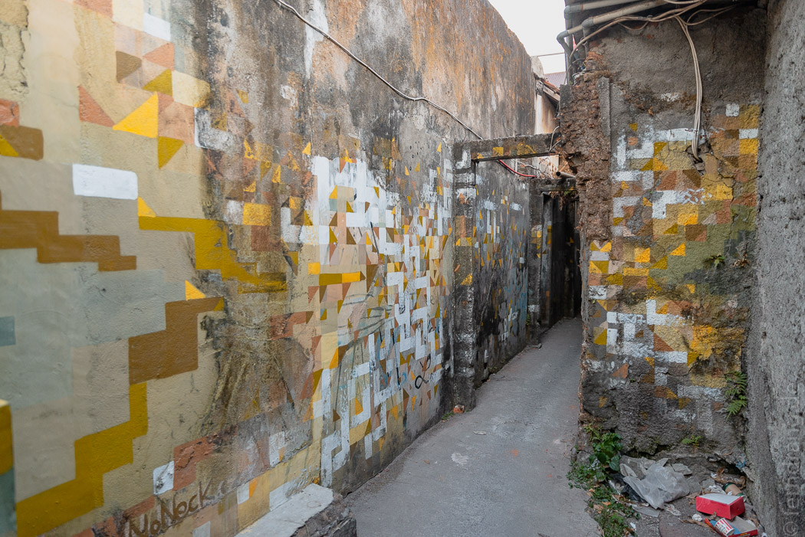
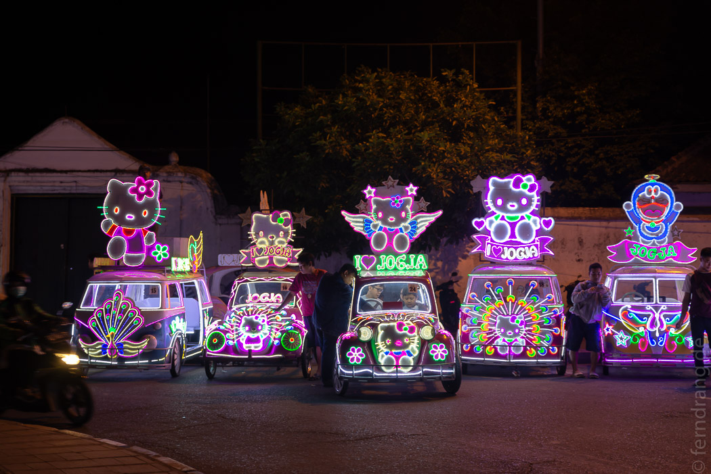

Nach der Wanderung am Mt. Ijen sind wir nach Yogjakarta gefahren. Mit verspäteten Flügen hat uns das leider den ganzen Tag gekostet. Endlich angekommen haben wir dann schnell die verpasste Nacht nachgeholt. Im Hotel Greenhost ist grün Programm. Es gibt ein Gewächshaus auf dem Dach. Der Patio um den Pool ist über drei Stockwerke mit Minze überwuchert, was eine „post-humane“ Atmosphäre schafft. Die laut surrenden Klimaanlagen zeugen jedoch von menschlicher Präsenz.
Schon auf den ersten Blick ist Jogja sympathischer als ihre große Schwester Jakarta. Die Bebauung ist nicht so hoch und die kleinen Sträßchen unseres Viertels sind geradezu beschaulich. In einem Becek, einer Motorrad-Rikscha mit dem Gästesitz vorne, haben wir uns durch die Sehenswürdigkeiten schippern lassen.
Der Sultanspalast ist größtenteils aus den Zwanzigern. Das hat zu lustigen architektonischen Anleihen geführt, wie etwa ein Musikpavillion aus Buntglas mit Gitarren- und Trompetenmotiven. Das Museum zeigt nur Dinge, die dem Sultan gehörten. Das schränkt die Auswahl natürlich etwas ein. Aber neben zahlreichen Uniformen hat er einige äußerst faszinierende Plastiklöffel und Messbecher besessen.
 Das in der Nähe gelegene Bad des Sultans hat in separaten Höfen hübsche Schwimmbecken für den Sultan, seine Frauen und den Rest des Hofs. Der Ausblick vom Balkon in das Frauenbad war sicher höchst anregend. Die größte Sorge war aber wohl die drohende Schmach beim Bade vom Feind erwischt zu werden. Daher gibt es trickreich angelegte, unterirdische Fluchtgänge, die bei Bedarf geflutet werden konnten.
Wer in die wuselige Basarstraße „Jalan Malioboro“ eintaucht, braucht stahlharte Nerven, um nicht komplett in Batik eingekleidet wieder ausgespuckt zu werden. Wir haben uns eher von den kleinen Essständen angezogen gefühlt. Eine Frau hat eine komplette Grillausrüstung samt hunderten Saté-Spießen auf ihrem Kopf balanciert und im Handumdrehen eine Parkbank zu ihrem Imbiss umfunktioniert. Unsere Experimente mit vermeintlichen Süßigkeiten waren weniger erfolgreich.
Südlich des Palasts hat sich eine kleine touristische Ecke etabliert. Hier gibt es viele Restaurants rund um die „Jalan Prawirotaman“ und auch eine tolle Eisdiele mit genialen Sorten wie Thai-Basilikum- oder Ingwereis. Jede freie Wand im Viertel wurde mit interessanten Graffitis verschönert.
  Nach Einbruch der Dunkelheit bietet der „Alun Alun“ am Palast (eine große Rasenfläche) ein besonderes Fahrvergnügen: Ganze Familien setzen sich in grell leuchtende „I Love Jogja“-Tretautos mit Käfer- oder VW-Bus-Karrosserien, die mit großen Hello-Kitty Figuren, Herzen, Flügeln oder Pfauen geschmückt sind. Natürlich alles in rosa, mit blinkenden Lichterketten und lauter Musik. Dabei filmen sich alle gegenseitig mit ihren Handys. Da diese einzigartige kulturelle Attraktion unerklärlicherweise nicht im Reiseführer erwähnt wird, sei es Reisenden hiermit wärmstens ans Herz gelegt.
